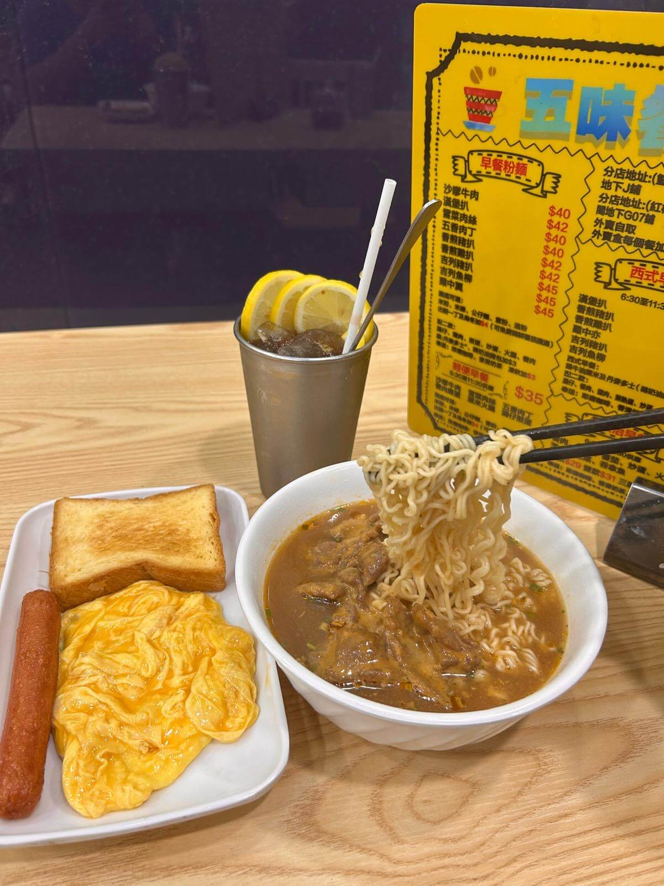
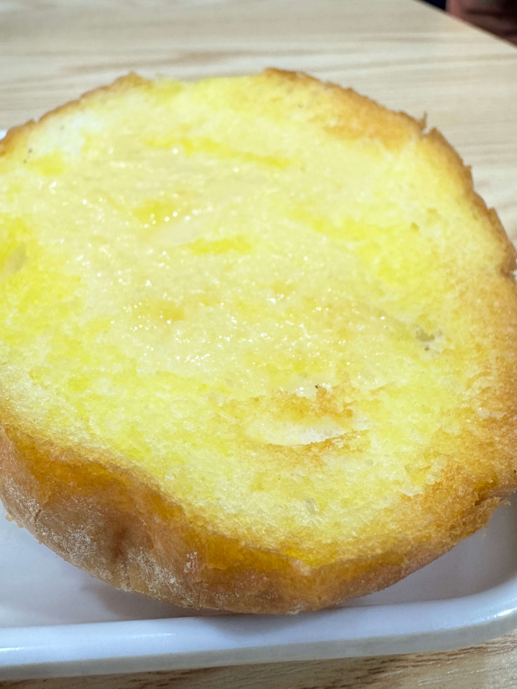
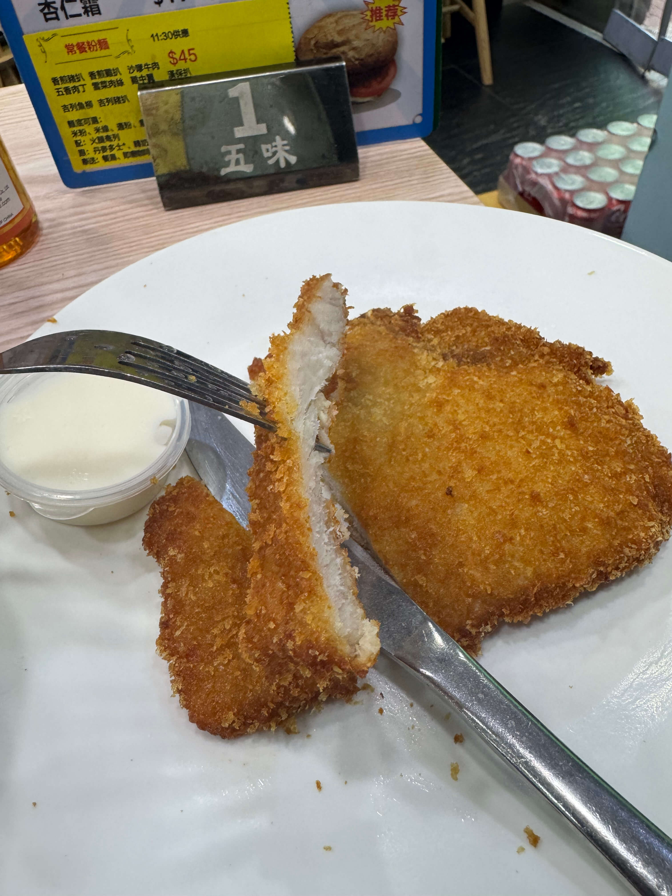
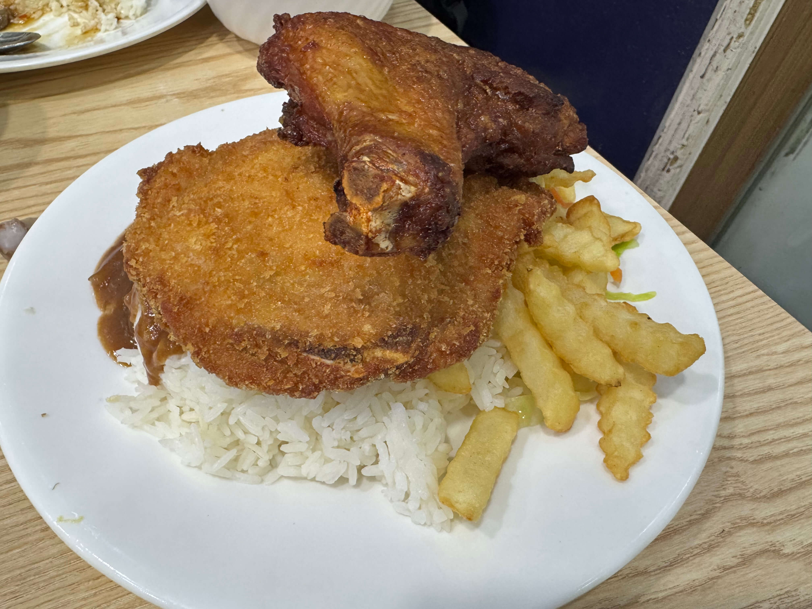
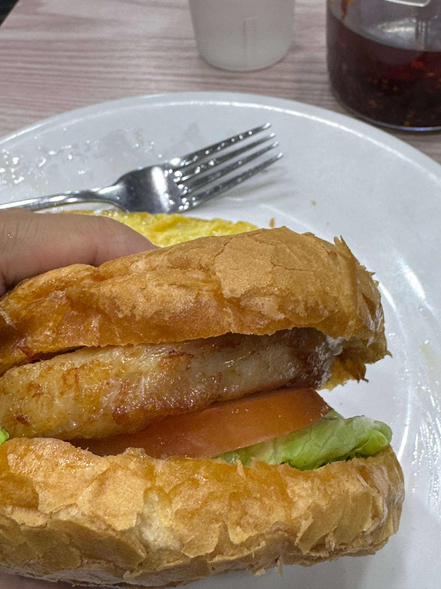

地址:屯門青菱徑3號東威閣地下G07號舖
營業時間:⏰ 6:30-17:00(不設晚市)
早餐推介

沙爹牛肉麵
他們的沙爹牛肉麵與一般茶餐廳不同，是這裡的招牌菜。一上桌，濃郁的沙爹香氣便撲鼻而來。老闆透露，這是在傳統港式做法中加入了泰式元素。花生醬的味道非常香濃，層次感比一般的沙爹牛肉麵更為厚實。湯底沙爹味濃郁，喝起來帶有明顯的花生香。牛肉咬下去有肉味、有嚼頭。我基本上每次來都會點，非常好吃。你也可以試試轉蕃茄湯，同樣出色，酸甜開胃，與沙爹牛肉也很搭配。

奶油豬
普通套餐跟的是一片丹麥多士配牛油，加$3可以升級做這個包。外層烤得香脆，塗滿煉奶，相當好吃。
午市推介

吉列豬扒
吉列豬扒看起來沒有甚麼特別，但切開的時候，你就會感受到那塊扒的肉質和表皮絕不軟爛。切一塊放入口，超有咬口！蘸一點沙律醬更加美味。其實這道吉列豬扒不只在午餐時段可以點，任何時候都可以叫。可以說是數一數二好吃的吉列豬扒。正如 Brian 所說，屬於「要穿兩條褲子」的級別。老闆也透露，這是「花了很多時間和心思鑽研出來的」。建議大家都來試試這裡的吉豬。

五味扒餐
這個扒餐可以自己揀兩款主菜，我自己每次都會選吉列豬扒和生炸雞髀。吉列豬扒一如以往出色（詳見上面介紹），炸雞髀是生炸的，外皮香脆得「嗦嗦」作響，裡面仍然保持多汁，一點也不乾柴。這次配菜選了飯，但盤子上還附有少量蔬菜和薯條，份量相當誇張，多到我需要另外拿一個碟子才能好好享用那隻雞髀。吃完真的飽到不行！
下午茶推介

豬扒包
除了吉列豬扒，這裡的煎豬扒同樣是招牌貨，鬆軟入味。夾在烘烤過的豬仔包裡面，加上少許沙律醬，簡單但美味。份量十足，性價比高。下午茶時段套餐還可以加$8配迷你粉麵，自由搭配喜歡的組合，例如沙嗲牛肉通粉、五香肉丁公仔麵，任君選擇。